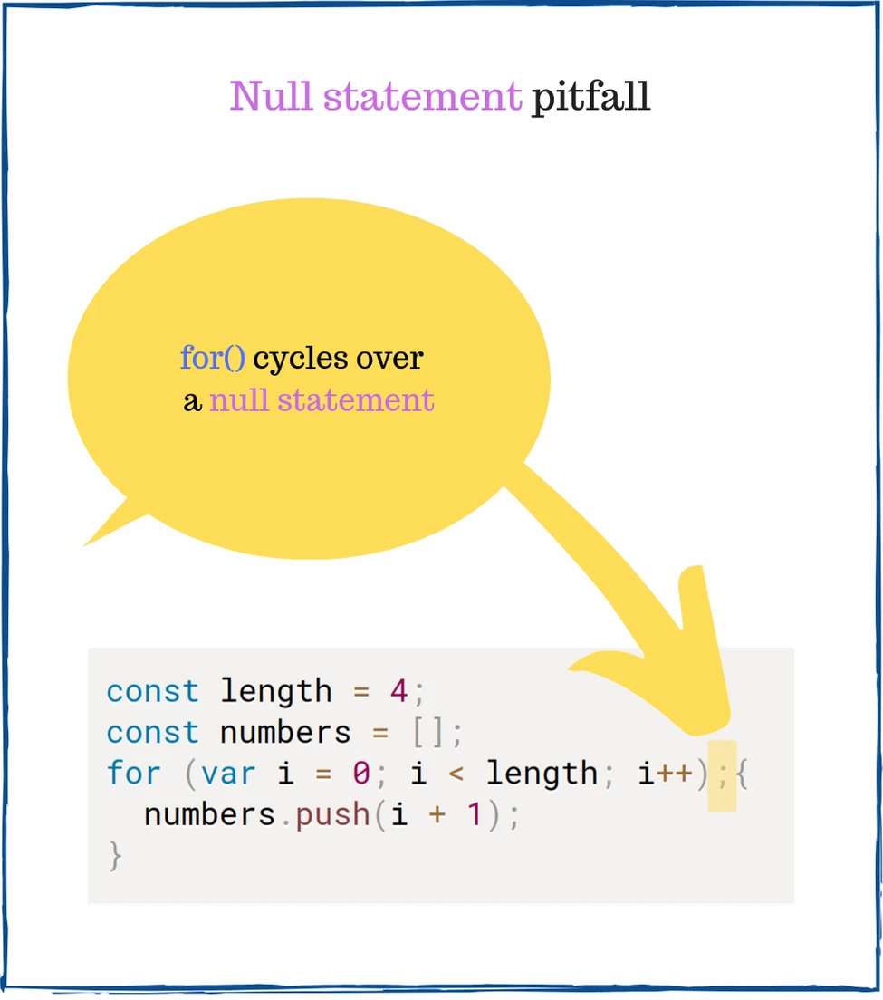

What is the content of numbers array:
const length = 4;
const numbers = [];
for (var i = 0; i < length; i++); {
numbers.push(i + 1);
}
console.log(numbers); // => ???
Let’s take a closer look at the semicolon ; that appears right before the opening curly brace {:

Being easily overlooked, this semicolon creates a null statement. The null statement is an empty statement that does nothing.
for() iterates 4 times over the null statement (that does nothing), ignoring the block that actually pushes items to array: { numbers.push(i + 1); }.
The above code is equivalent to the following:
const length = 4;
const numbers = [];
var i;
for (i = 0; i < length; i++) {
// does nothing
}
{
// a simple block
numbers.push(i + 1);
}
console.log(numbers); // => [5]
for() increments i variable until 4. Then JavaScript enters one time the block { numbers.push(i + 1); }, pushing 4 + 1 to numbers array.
Thus numbers is [5].